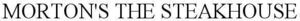

Trade Mark Journal No.2025/046 14 November 2025
WO0000001883467 (8,20,21,24)
Office of origin: United States of America
Date of International Registration:29 August 2025
Date of designation in the UK:
29 August 2025

International priority date claimed: 22 August 2025
(United States of America)
(99351700)
- Class 8
- Tableware cutlery, namely, knives, forks and spoons.
- Class 20
- Dispensers, not of metal, for paper hand towels.
- Class 21
- Paper towel holders; kitchenware, namely, bread boxes; household containers for foods; non-electric household or kitchen containers not made of precious metals; portable coolers; portable beverage coolers and beverage dispensers; portable ice chests for food and beverages; thermal insulated containers and tote bags for food and beverages; whisks, pie servers, non-electric juicers, juice reamers, knife blocks, colanders for household use, flour sifters, cooking sifters, potato mashers, melon ballers, corn on the cob holders and skewers, ice cream scoopers, skimmers, vegetable brushes, mixing bowls, trivets, garlic presses, and brushes for basting meat; salt and pepper shakers; dinnerware, namely, glass, earthenware, porcelain and plastic dishes, plates, bowls, serving platters, teapots not of precious metal, and china dinnerware; glass, earthenware, porcelain and plastic beverageware, namely, mugs, cups, tumblers, goblets, carafes, decanters, pitchers, beverage stirrers, beer jugs, drinking steins and glasses, flasks; coasters not of paper or linen, bottles sold empty and glass storage jars sold empty, insulating jars, cookie jars and glass jars for jams; serveware and household utensils, namely, serving spoons, serving forks, slotted spoons, mixing spoons, graters, spatulas, basting spoons and ladles; barware, namely, cocktail shakers, corkscrews, bottle openers, cork holders, coolers or cooling buckets for wine or beverage cooling, bottle stands; plastic buckets and ice buckets; bakeware; baking dishes; beer mugs; beverage glassware; beverageware; bottle openers; bowls; bread boards; bread boxes; bread bins; brushes for basting meat; butter coolers, dishes and pans; butter-dish and cheese-dish covers; cake brushes, molds, pans, rests, rings, servers, stands and tins; canister sets; carving boards; casseroles; cheese graters; chopping boards for kitchen use; lemon squeezers; coffee cups; coffee scoops for household purposes; coffee pots not of precious metal; coffee services not of precious metal; coffee stirrers; colanders; confectioners' decorating bags; cookie cutters, jars and sheets; cooking pots and pans, sieves and sifters, skewers, steamers and strainers; cookware, namely, pots and pans, roasting pans and steamers; coolers for wine; cups; cutting boards; decorating bags for confectioners; dinnerware, namely, plates, cups and saucers; dishes and plates; dispensers for liquid soap; drinking cups and glasses; dutch ovens; earthenware mugs; egg cups, poachers and separators; frying pans; glass beverageware, bowls, carafes, dishes, mugs, pans and storage jars; goblets; gravy boats; household utensils, namely, graters, sieves, spatulas and turners; ice cream scoops; kitchen ladles and urns; knife blocks, boards and rests; meal trays; mixing cups and spoons; muffin tins; mugs; napkin holders, not of precious metal; non-electric egg beaters, griddles, juicers, kettles; kitchen containers, not of precious metal; pressure cookers and pressure cooking saucepans; oven to table racks; ovenware; pastry boards, cutters and molds; pie pans and servers; plates; pots; roasting dishes; rolling pins; salad bowls and spinners; sauceboats, not of precious metal; saucepans; saucers; scrapers for household use; serving bowls, dishes, forks, ladles, spoons and tongs; serving platters and trays, not of precious metal, for household purposes; soup tureens; stemware; trays, not of precious metal, for household purposes; utensils for barbecues, namely, forks, tongs, turners; whisks; woks; containers for household use; oven mitts; pot holders; kitchen mitts.
- Class 24
- Textile table linens; kitchen textiles, namely, kitchen towels, kitchen linens, and kitchen countertop protector mats.
Morton's of Chicago, Inc.
Representative: JASON PAUL BLAIR NEAL & McDEVITT, LLC, Suite 201, , 2801 Lakeside Drive, Bannockburn IL 60015, UNITED STATES OF AMERICA